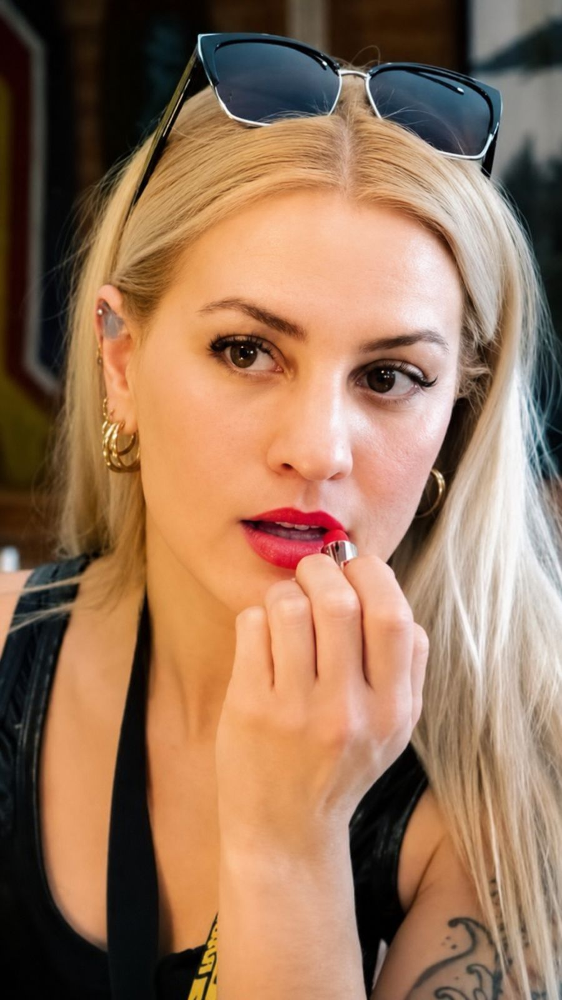

ShakeJacqueline
Sobre mí
Soy Shake.
Me llaman así desde la adolescencia; mi nombre real es Jacqueline. Soy una amante de la belleza, la salud y el arte, y a lo largo de mi vida invertí en formarme para especializarme en cada una de esas áreas.
Mi camino comenzó desde la pasión por transformar no solo la imagen de las personas —personalizando su piel— sino también la manera en que se sienten consigo mismas. Desarrollé una visión que combina técnica, creatividad y estrategia, con una impronta auténtica, moderna y emocional.
Más que ofrecer servicios, mi objetivo es construir una comunidad donde las personas puedan expresarse, potenciar su seguridad y conectar con su mejor versión.